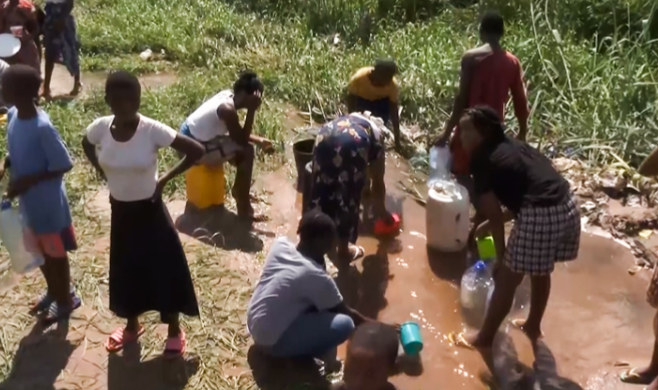
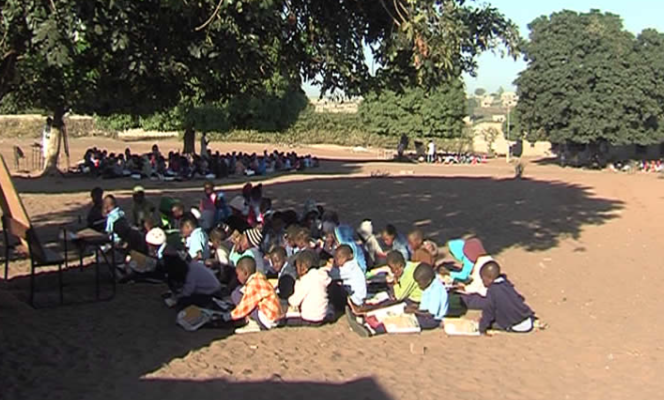
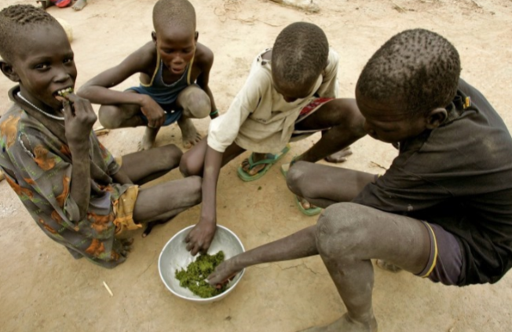

Juntos por um Meti mais forte
Meti é um Posto Administrativo localizado no distrito de Lalaua, província de Nampula, Moçambique. Milhares de pessoas enfrentam desafios relacionados com água, educação, saúde e alimentação.
DOAR AGORAHabitantes
Escolas
Alunos
Centros de Saúde
Poços de Água
Até Lalaua-Sede

Muitas famílias ainda enfrentam dificuldades no acesso à água potável segura. A nossa missão é apoiar iniciativas que melhorem o abastecimento de água para as comunidades.

Em várias escolas, crianças estudam debaixo de árvores ou sentadas no chão devido à falta de salas de aula adequadas e mobiliário escolar.

Muitas famílias enfrentam dificuldades alimentares. O projeto procura apoiar ações que contribuam para melhorar a nutrição e a qualidade de vida.
O apoio dos doadores será direcionado para áreas essenciais que podem transformar a vida da população de Meti.
Reabilitação de poços avariados, construção de novos pontos de água e melhoria do acesso à água segura.
Construção de salas de aula, aquisição de carteiras, material escolar e melhoria das condições de ensino.
Apoio aos centros de saúde, aquisição de medicamentos básicos e reforço dos cuidados de saúde.
Combate à desnutrição infantil e apoio alimentar às famílias mais vulneráveis.
Meti possui uma população estimada em 128.465 habitantes, distribuídos por várias comunidades, incluindo Nioce e Naquessa. A região conta com 22 escolas, cerca de 9.754 alunos, dois centros de saúde e diversos desafios relacionados com o desenvolvimento comunitário.